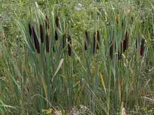

Typhaceae
Cattail Family
The Typhaceae family, commonly known as the cattail family, comprises rhizomatous, perennial, wetland plants. It includes the well-known cattails (Typha) and the closely related bur-reeds (Sparganium). These plants are typically found in marshes, swamps, ponds, and along stream banks worldwide, particularly in temperate and tropical regions.
Overview
Typhaceae are obligate wetland plants characterized by their linear leaves and distinctive dense, cylindrical (Typha) or spherical (Sparganium) flower spikes. They are monoecious, meaning male and female flowers are separate but occur on the same plant. These plants play important ecological roles in wetland ecosystems, providing habitat and food for wildlife, stabilizing shorelines, and filtering water.
Members of this family are found globally in aquatic and semi-aquatic habitats. They spread primarily through rhizomes, often forming dense colonies. The wind-pollinated flowers produce vast quantities of tiny, wind-dispersed seeds or small, buoyant fruits.
Economically, cattails have been used traditionally by various cultures for food (rhizomes, young shoots, pollen), weaving materials (leaves), and insulation (fluff from mature seed heads). They are also increasingly used in constructed wetlands for wastewater treatment and shoreline restoration projects.
Quick Facts
- Scientific Name: Typhaceae
- Common Name: Cattail family, Bur-reed family
- Number of Genera: 2 (Typha, Sparganium)
- Number of Species: Approximately 50-70
- Distribution: Worldwide, primarily in wetland habitats
- Evolutionary Group: Monocots - Commelinids
Key Characteristics
Growth Form and Habit
Typhaceae are perennial, herbaceous, aquatic or semi-aquatic plants growing from stout, starchy rhizomes. Stems (culms) are typically erect, unbranched, and cylindrical. They often form extensive, dense stands in shallow water or saturated soils.
Leaves
Leaves are basal and/or alternate along the lower part of the stem. They are long, linear, strap-like, and parallel-veined, typical of monocots. The leaf bases sheath the stem. In Typha, leaves are typically flat, while in Sparganium, they can be flat or somewhat keeled (triangular in cross-section).
Inflorescence
The inflorescence is a terminal spike or series of heads, bearing numerous small, unisexual flowers densely packed together. Plants are monoecious.
- Typha: Flowers are arranged in a very dense, cylindrical spike (spadix), with the male (staminate) flowers in the upper, narrower section and the female (pistillate) flowers in the lower, thicker, typically brown section. The male portion often withers after pollen release.
- Sparganium: Flowers are arranged in separate, dense, spherical heads along the upper part of the stem. The upper heads are typically male (staminate), and the lower heads are female (pistillate).
Flowers
Individual flowers are greatly reduced and simplified, lacking obvious petals or sepals (perianth parts are reduced to bristles or scales, or absent).
- Male Flowers: Consist of 1-8 stamens, often subtended by hairs or scales.
- Female Flowers: Consist of a single superior ovary with one ovule, a single style, and a stigma. In Typha, the ovary is stalked and surrounded by numerous hairs (which form the fluffy part of the mature head). In Sparganium, the ovary is sessile and subtended by scale-like perianth parts.
Pollination is typically by wind (anemophily).
Fruits and Seeds
The fruit is small, dry, and typically one-seeded.
- Typha: The fruit is an achene-like follicle borne on a stipe (stalk) with numerous attached hairs (derived from the perianth and aborted flowers) that aid in wind dispersal. The entire female spike disintegrates into a fluffy mass.
- Sparganium: The fruit is an achene or drupe-like structure, often somewhat spongy or corky, aiding in water dispersal (hydrochory). Fruits are clustered in the persistent spherical heads.
Chemical Characteristics
Typhaceae are not particularly known for unique secondary metabolites like Asteraceae. They primarily store carbohydrates as starch in their rhizomes. The tissues contain air channels (aerenchyma) facilitating gas exchange in waterlogged environments.
Field Identification
Identifying members of the Typhaceae family in the field is generally straightforward due to their characteristic wetland habitat and distinctive inflorescences.
Primary Identification Features
- Habitat: Found exclusively in wetlands (marshes, swamps, ponds, ditches, lake margins).
- Growth Habit: Perennial herbs growing from rhizomes, often in dense stands.
- Leaves: Long, linear, strap-like, parallel-veined leaves, sheathing at the base.
- Inflorescence (Typha): Dense, cylindrical, brown spike ("cattail") with separate upper male and lower female sections.
- Inflorescence (Sparganium): Separate, spherical flower heads arranged along the upper stem (male heads above female heads).
Secondary Identification Features
- Stems: Erect, unbranched, round in cross-section.
- Rhizomes: Presence of thick, starchy underground rhizomes.
- Fruit (Typha): Fluffy, cottony mass on mature female spikes.
- Fruit (Sparganium): Burr-like spherical clusters of beaked fruits.
Seasonal Identification Tips
- Spring: Look for emerging bright green shoots and leaves from rhizomes.
- Summer: Peak flowering season. Distinctive green (immature) or brown (mature female) spikes of Typha and spherical heads of Sparganium are visible.
- Fall: Mature brown cattail spikes become prominent. Typha spikes may begin to disintegrate, releasing fluff. Sparganium fruit heads persist. Leaves turn yellow or brown.
- Winter: Dried, persistent stalks and cattail spikes (often tattered) or bur-reed heads may remain visible above the ice or snow.
Common Confusion Points
Typhaceae might be confused with other large, grass-like wetland plants:
- Sedges (Cyperaceae): Often have triangular stems ("sedges have edges") and different, often complex, flower structures (spikelets).
- Rushes (Juncaceae): Typically have round stems and small, inconspicuous, 6-parted flowers (like tiny lilies) clustered near the stem tip.
- Grasses (Poaceae): Usually have round, hollow stems with distinct nodes ("joints") and characteristic flower structures (spikelets with lemmas and paleas).
- Irises (Iridaceae): Have flat leaves arranged in a fan, but possess large, showy flowers with 3 petals and 3 sepals.
Field Guide Quick Reference
Look For:
- Wetland habitat
- Linear, parallel-veined leaves
- Dense, cylindrical spike (Typha)
- Spherical flower/fruit heads (Sparganium)
- Rhizomatous growth
Key Variations:
- Typha: Single dense spike, fluffy seeds
- Sparganium: Multiple spherical heads, bur-like fruits
- Leaf cross-section (flat vs. keeled)
Notable Examples
The Typhaceae family includes well-known wetland plants.

Typha latifolia
Broadleaf Cattail / Common Cattail
Perhaps the most recognizable species, found across North America and Eurasia. Characterized by its broad leaves (up to 1 inch wide) and thick, dark brown female spike, which directly touches the thinner male spike above it (no gap). Forms dense stands in shallow water.

Typha angustifolia
Narrowleaf Cattail
Distinguished from T. latifolia by its narrower leaves and a distinct gap on the stem between the male and female portions of the flower spike. Often hybridizes with T. latifolia, producing intermediate forms (Typha x glauca).

Sparganium eurycarpum
Giant Bur-reed / Broadfruit Bur-reed
A common North American species with robust stems and leaves. Recognizable by its separate, spherical flower heads – several lower, larger female heads and numerous upper, smaller male heads. The mature female heads form spiky, bur-like clusters of fruits.

Sparganium americanum
American Bur-reed
Another common bur-reed in eastern North America, typically smaller than S. eurycarpum. It often has floating leaves as well as emergent ones. The arrangement and number of male and female heads can help distinguish it from other Sparganium species.
Phylogeny and Classification
Typhaceae belongs to the order Poales, a large and diverse order within the monocot clade known as commelinids. This order also includes grasses (Poaceae), sedges (Cyperaceae), rushes (Juncaceae), and bromeliads (Bromeliaceae). Molecular phylogenetic studies strongly support the placement of Typhaceae within Poales and indicate a close relationship between Typha and Sparganium.
Historically, Typha and Sparganium were often placed in separate families (Typhaceae and Sparganiaceae). However, genetic data shows they form a single, well-supported clade, leading the Angiosperm Phylogeny Group (APG) systems (APG III onwards) to merge Sparganiaceae into Typhaceae.
Position in Plant Phylogeny
- Kingdom: Plantae
- Clade: Angiosperms (Flowering plants)
- Clade: Monocots
- Clade: Commelinids
- Order: Poales
- Family: Typhaceae
Evolutionary Significance
Typhaceae represent an early diverging lineage within the Poales. Their adaptation to wetland environments is significant. Key evolutionary aspects include:
- Adaptation to aquatic life: Development of rhizomes, aerenchyma tissue for gas transport, and specialized reproductive structures suited for wetland conditions.
- Wind pollination (anemophily): Reduced flowers, production of copious pollen, and feathery stigmas are typical adaptations for wind pollination, common in the Poales.
- Specialized dispersal: Wind dispersal via plumed fruits (Typha) and water/animal dispersal via buoyant/bur-like fruits (Sparganium).
- Phylogenetic position: Understanding Typhaceae helps clarify the early evolution and diversification of the large and ecologically critical Poales order.